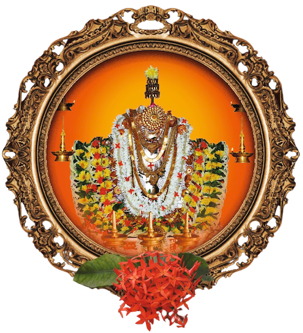

Shree Perne Muchilot Bhagavathi Kshetra
ಸರ್ವ ಮಂಗಳೆ ಅಭಯ ವರದೇ ಸಿದ್ದಿ ಬುದ್ಧಿ ಪ್ರಧಾಯಿನಿ
ಶಿವಾಂಶ ಸಂಭೂತೆ ದೇವಿ ಪೆರ್ಣೆಪುರ ನಿವಾಸಿನೀ..
ಅನ್ನಪೂರ್ಣೆ ಮಹಾಮಾತೆ ತೈಲಕರ ಕುಲಪೂಜಿತೆ
ಪಾವಕೇನ ಪಾವನೋಧ್ಭೂತೆ ಮುಚ್ಚಿಲೋಟ್ ಭಗವತೀ ನಮೊಸ್ತ್ಹೊತೆ


When traveling approximately five kilometers on the Kumbala to Badiadka road in the Kasaragod district, one is greeted on the right side by the grand entrance of the Shree Perne Muchilot Bhagavathi Kshetra. This temple is home to Shree Muchilot Bhagavathi, the family deity of the Vaniya/Ganiga community, and is one of the prominent among the eighteen Muchilotu temples in Kerala. The temple, surrounded by sacred trees, is nestled in a serene, nature-rich area.
The Kshetra is renowned for its peaceful and compassionate deity, Shree Perne Muchilot Bhagavathi, who is also revered as Annapoorneshwari, the goddess of food and nourishment. Known for fulfilling the wishes and desires of devotees, the temple's significance is a matter of personal experience. With a history that dates back centuries, this temple stands as a symbol of ideal practices and traditions, instilling pride with its commitment to simplicity, equality, fraternity, and social responsibility.
The Kshetra, famous in the Kumbala region, underwent renovations, culminating in the Punarprathishta (re-consecration) and Brahmakalashotsava festival in March 2020. Although the temple had planned to host the Kaliyata alongside the Brahmakalashotsava, the COVID-19 pandemic caused a delay. After a gap of 20 years since the last Kaliyatam festival in 2004, the Pernna temple is once again ready to celebrate Kaliyatam from March 1st to 7th, 2024. It is the collective aspiration of the community to elevate this event to a grand celebration, drawing devotees from surrounding districts and even from other states. As the temple anticipates a large gathering of devotees, it remains a beacon of faith and hope. Devotees who visit the Shree Kshetra during this festive period, seeking blessings, wish for Shree Perne Muchilot Bhagavathi to bestow them with health, happiness, and prosperity. This is our collective prayer at the sacred feet of the Amma Bhagavathi.


Perne Muchilot is one of the holiest and most revered shrines in Northern Kerala, fondly frequented for its cultural brilliance and well-carved calm and serene complex. Situated in Perne (also called Perdana) near Kumbla, the temple is a coveted destination for thousands of pilgrims from Kerala and Karnataka during festival times. The beautiful edifice of Perne Kshetra is covered by natural greenery and is well-maintained to accommodate thousands of devotees. It is the sacred abode of the all-encompassing divine presence of Shree Muchilot Bhagavathi Devi. The Kshetra is sanctified by the presence of sub-deities Kannanagat Bhagavathi, Pullur Kali Bhagavathi, Pullur Kannan Daivam, Vishnu Moorthy, Moovalamkuzhi Chamundi, Beernalva, and Pandinhar Chamundi.
Besides its spiritual significance, Perne is well-known for its cultural and social importance. It upholds the idea of simplicity and compassion. Perne Kshetram is run by a systematic administration and has its own glory and greatness. Mass marriages here, with their core idea of simplicity, are well-known and socially respected.

Muchilot Bhagavathi Devi is the Kuladevatha or the chief goddess of the Vaniya community. Goddess Muchilot Bhagavathi is also called Annapurneshwari and embodies all scholastic abilities, courage, and kindness. She is believed to be sent to earth to annihilate all evils. Bhagavathi is the source of all prosperity, the reservoir of all knowledge, and an immeasurable ocean of benevolence.
Muchilot Bhagavathi is devoted across one hundred and eight shrines (Kavu's) in Kerala. Perne, the auspicious place enshrined with divinity, is the northernmost Kavu in Kerala. Pooja rituals are carried out through prayers using flowers, fruits, rice, and appam. The major festivals celebrated at the temple are Chevvavelaku, Udayastamanam, Puthari, Pooram, Kootam, and Perumkaliyattam.